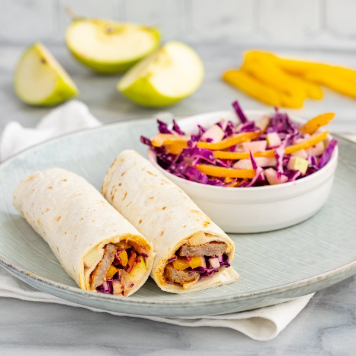

"Currywurst" Sausage Wrap with Red Cabbage, Bell Pepper & Apple Slaw

Total Time
30 min
Nutrition (Per Serving)
695.4 kcalCalories
27.7 gProtein
66.6 gCarbs
36.8 gFat
Full nutrition table
| Calories | 695.4 kcal |
| Total fat | 36.8 g |
| Saturated fat | 10.4 g |
| Trans fat | 0.9 g |
| Cholesterol | 80.3 mg |
| Sodium | 1331.9 mg |
| Carbohydrates | 66.6 g |
| Fiber | 7.8 g |
| Sugars | 25.2 g |
| Protein | 27.7 g |
| Potassium | 1033.4 mg |
| Calcium | 184.8 mg |
| Iron | 5.5 mg |
| Vitamin A | 371.1 IU |
| Vitamin C | 200.8 mg |
| Vitamin D | 25.2 IU |
Cookware
Ingredients
- 2Granny Smith apples
- 4large flour tortillas
- 1lemon
- ¼ cupplain Greek yogurt
- 4pork sausages
- 1 small headred cabbage
- 2yellow bell peppers
- apple cider vinegar
- black pepper
- cayenne pepper
- curry powder
- extra virgin olive oil
- garlic powder
- ketchup
- mayonnaise
- paprika
- salt
- Worcestershire sauce
Steps
- Preheat a grill pan, outdoor grill, or regular skillet over medium-high heat.
- Meanwhile, wash and dry the fresh produce.1 lemon
1 small head red cabbage
2 Granny Smith apples
2 yellow bell peppers - Once the pan is hot, coat with oil; add sausages and cook, turning occasionally, until cooked through, 12-15 minutes. Remove from heat.2 tsp extra virgin olive oil
4 pork sausages - While the sausages are cooking, place ketchup, water, Worcestershire, vinegar, and spices in a small bowl. Whisk to combine the sauce and set aside.¼ cup ketchup
2 tbsp water
2 tsp Worcestershire sauce
2 tsp apple cider vinegar
2 tsp curry powder
1 tsp garlic powder
½ tsp paprika
½ tsp salt
⅛ tsp cayenne pepper - Juice lemon into a large bowl; add yogurt, mayo, and spices. Whisk to combine the dressing.¼ cup plain Greek yogurt
4 tsp mayonnaise
½ tsp garlic powder
½ tsp salt
¼ tsp black pepper - Quarter cabbage lengthwise, then cut out and discard the core; slice crosswise into thin (shred-like) strips and add to the bowl with the dressing.
- Quarter, core, and small dice apples; add to the bowl.
- Trim, halve, seed, and slice bell peppers into thin strips; add to the bowl and toss to combine the slaw. Set aside.
- When the sausages are done, transfer to a cutting board and slice crosswise into thin rounds.
- Warm tortillas in a skillet, oven, or microwave (optional).4 large flour tortillas
- Place tortillas on a flat surface and top each with a small portion of slaw; arrange sausage slices on top and drizzle with sauce. Roll tightly to close. (Reserve remaining slaw for serving.)
- Cut wraps in half and divide between plates; serve with remaining slaw on the side. Enjoy!